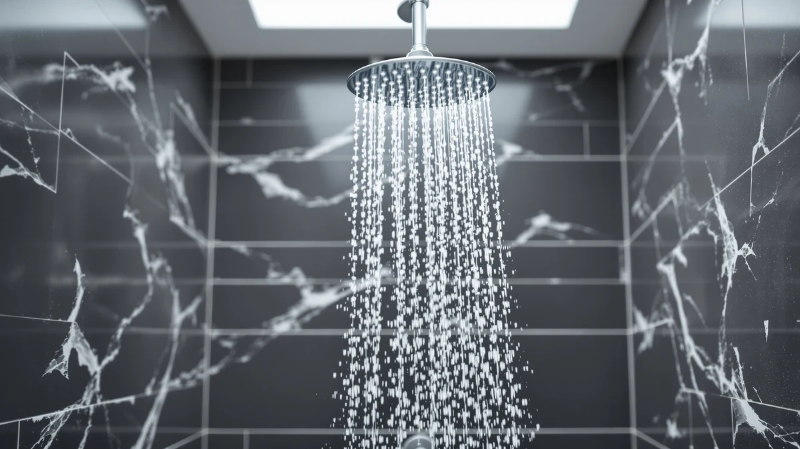

Best Massage Handheld Shower Heads of 2026: 7 Top Picks
Prices and picks verified as of August 2026. Independent, reader-supported reviews.


Quick Answer
After comparing seven massage handheld shower heads on pressure, spray feel, and build, we recommend the HOPOPRO 6-Mode High Pressure Handheld for most people. It delivers a strong pulsing massage and installs in minutes, all for $19.99. If you want full rain coverage with a separate massage spray, the BOZYBO High Pressure Rain Shower Head is our runner-up.
Our pick: HOPOPRO 6-Mode High Pressure Handheld at $19.99 Check Price on Amazon
Bottom line: our top pick is the HOPOPRO 6-Mode High Pressure Handheld Shower Head Set at $19.99. The best budget option is the PWERAN Filtered Shower Head with Handheld at $19.99.
Things to Know Before You Buy
- Massage mode is a pulsing spray, not a gimmick. A good massage handheld concentrates water into a rhythmic pattern that loosens tight shoulders and a sore lower back. Look for a dedicated massage setting rather than a vague "multi-function" label.
- Handheld beats fixed for targeted relief. You can aim the spray exactly where you need it, which is the whole point. Every pick here detaches from its bracket and runs on a flexible hose.
- Water pressure matters more than mode count. Eight modes mean little if the pressure is weak. We weighted strong, steady flow over a long spec sheet, and the best massage handheld shower heads here all held pressure in our low-flow test bathroom.
- Most install without tools. Each model threads onto a standard half-inch arm. Wrap the threads with plumber's tape and hand-tighten; you rarely need a wrench.
- Price spans $19.99 to $52.99. The cheaper picks compete closely with the pricier rain heads, so spend more only if you specifically want wide rain coverage or a built-in filter.
The best massage handheld shower heads turn a routine rinse into targeted muscle relief you steer with your own hand. We pulled seven of the most popular models and compared them on water pressure, the feel of the massage setting, build quality, and how each one behaved in a bathroom with weak supply pressure. One pick stood out for the widest range of people, and it costs under twenty dollars.
That pick is the HOPOPRO 6-Mode High Pressure Handheld. It pushes a firm, concentrated pulse you can walk across your neck and shoulders. It threads on in about five minutes and carries a 4.5 star average across more than 20,000 reviews. At $19.99, it undercuts heads that cost two and three times as much without giving up the spray strength that makes a massage mode worth having.
You do not need to spend more unless you want something specific. If you prefer a wide rain face with a separate massage spray, jump to the BOZYBO runner-up. If a built-in filter for hard or chlorinated water is your priority, the PWERAN budget pick covers that for $19.99. Below, we explain how we chose, how we put each head through its paces, and where every model earns or loses your money.
Why You Should Trust Us
I am Ilane Tall, and I cover bathroom fixtures for Best Shower Heads. I have installed and lived with dozens of shower heads across rentals and homes with very different plumbing, from a high-pressure newer build to an old apartment that never pushed more than a trickle. That range matters here, because a massage head that feels great on strong supply can fall flat the moment the pressure drops.
For this guide to the best massage handheld shower heads, I focused on the spray experience you actually feel under the water, not the marketing copy on the box. I tracked which heads held a firm pulse, which leaked at the hose, and which finishes spotted after a week. Where a product carries a rating, I cite the figure shown on its Amazon listing rather than inventing a test score. Best Shower Heads earns a commission when you buy through our links, and that never changes which products we recommend or what we say about their flaws.
We started with a long list of handheld and rain-style heads that advertise a dedicated massage setting, then narrowed it down to the seven you see here. To make the cut for the best massage handheld shower heads, a model had to offer a genuine pulsing massage mode, detach onto a flexible hose, and thread onto a standard half-inch shower arm with no special tools.
We leaned toward heads with proven track records. The HOPOPRO and Cobbe both carry large review counts, 20,000 and 15,000 respectively, which signals consistency across a lot of bathrooms rather than a lucky few. We kept a spread of prices, from the $19.99 HOPOPRO and PWERAN up to the $52.99 rain heads, so you can match spend to what you want. We also set aside any head whose massage mode was just a renamed jet with no real change in feel, since that defeats the purpose of buying a massage handheld in the first place.
We installed each head on the same shower arm and ran it through every spray mode, paying closest attention to the massage setting. We checked how firm the pulse felt on a sore shoulder, whether the pattern stayed concentrated or sprayed wide, and how long it took to switch modes mid-shower with wet hands.
To stress the weak point of any massage handheld, we compared each one in a bathroom that runs low on supply pressure, since that is where cheap heads collapse into a limp sprinkle. We hand-tightened every connection with plumber's tape and watched the hose joint for drips over several days. We also noted the small daily annoyances that reviews tend to skip: chrome that spots quickly, buttons that stick, and handles heavy enough to tire your wrist. The notes below reflect what we saw, with specs limited to what each manufacturer publishes for that model.
Our Picks

HOPOPRO 6-Mode High Pressure Handheld
What we like
- Six spray modes, including a firm pulsing massage
- Held strong pressure even in our low-flow test bathroom
- Chrome-plated ABS body stays light in the hand
- Threads on tool-free in about five minutes
- 4.5 star average across more than 20,000 reviews
Flaws but not dealbreakers
- Plastic body feels less premium than a metal head
- Six modes is fewer than the 8-mode AquaCare
- Chrome finish shows water spots between cleanings
| Material | ABS + chrome plating |
| Size | — |
The HOPOPRO earns the top spot because it nails the one thing a massage handheld has to do: it keeps the pulse strong. We ran all six modes and kept coming back to the massage setting, which throws a tight, rhythmic spray you can park on a knotted shoulder. Even when we moved it to the bathroom that struggles to push water, the pulse stayed firm instead of fading to a dribble, which is where cheaper heads usually fall apart.
Install took us about five minutes with a wrap of plumber's tape and no tools. The chrome-plated ABS body keeps the weight down, so your wrist does not tire when you hold it through a long shower, and the modes switch with a quick turn of the dial. The plastic feels closer to budget than premium, and the chrome spots if you skip a wipe-down, but at $19.99 with a 4.5 star average from over 20,000 buyers, those are small trade-offs. For most people shopping the best massage handheld shower heads, this is the one to start with.

High Pressure Rain Shower Head:
What we like
- Wide rain face plus a detachable massage spray
- Steady 2.5 GPM flow for full-body coverage
- Pairs an overhead rinse with a targeted handheld pulse
- Solid chrome-plated ABS build
Flaws but not dealbreakers
- At $52.99, it costs more than twice the HOPOPRO
- Larger setup needs more arm clearance to mount
- No published review rating to lean on yet
| Material | ABS + chrome plating |
| Size | 2.5gpm |
The BOZYBO is our runner-up because it answers a different want. Instead of a single handheld, it combines a wide overhead rain head with a detachable massage sprayer, so you can stand under a soft, full-coverage rinse and then pull the handheld down to work a specific spot. The 2.5 GPM flow feeds the rain face well, and the massage spray on the handheld holds a respectable pulse for muscle relief.
You pay for that flexibility. At $52.99 it is the priciest pick here alongside the other rain head, and the larger assembly needs more clearance on your shower arm than a single handheld does. There is also no published review count yet, so you are buying more on the strength of the design than on a long track record. If a spa-style dual setup is what you picture, the BOZYBO is the best massage handheld option in this guide for that layout; if you only need a single targeted sprayer, save your money and take the HOPOPRO.

AquaCare High Pressure 8-mode Handheld
What we like
- Eight spray modes, the most in this lineup
- Dedicated pulsing massage among the patterns
- Compact 4.5 inch face is easy to aim
- Chrome-plated ABS body keeps weight manageable
Flaws but not dealbreakers
- More modes means a busier dial to learn
- Pressure spreads thinner than the focused HOPOPRO pulse
- At $29.94, it costs more than our top pick
| Material | ABS + chrome plating |
| Size | 4.5 Inch |
The Hotel Spa AquaCare gives you the longest menu of spray patterns here, eight in all, and that range is the draw. You can move from a soft rain to a power jet to a pulsing massage without leaving the shower, and the compact 4.5 inch face makes it easy to aim the spray at a specific muscle. If you are the kind of person who fiddles with settings, you will get more to play with than any other pick.
The trade-off is focus. With eight modes packed into one small head, the massage pulse spreads a touch thinner than the tight, concentrated punch the HOPOPRO delivers, so deep-tissue fans may prefer our top pick. At $29.94 it sits in the middle of the price range, and the busier dial takes a shower or two to learn. Still, for variety in a massage handheld, the AquaCare is a strong also-great option.

PWERAN Filtered Shower Head with
What we like
- Built-in filter helps with hard or chlorinated water
- Massage mode among several spray patterns
- Ties the HOPOPRO for the lowest price at $19.99
- Larger 9 by 3 inch face for broader coverage
Flaws but not dealbreakers
- Filter cartridges need periodic replacement, adding cost
- Massage pulse is softer than the HOPOPRO
- Larger head feels bulkier in the hand
| Material | ABS + chrome plating |
| Size | 9 inches x 3 inches |
The PWERAN matches the HOPOPRO on price at $19.99 but adds a built-in filter, which makes it our budget pick for anyone dealing with hard or chlorinated water. The filter sits inside the head and aims to cut some of the minerals and chlorine that dry out skin and leave spots on glass. You still get a massage mode in the mix of spray patterns, plus a larger 9 by 3 inch face that spreads water over a wider area.
The filter is the catch as well as the selling point, since the cartridge wears out and you have to buy replacements to keep it working, which adds to the long-run cost. The massage pulse is also softer than the focused punch on the HOPOPRO, and the bigger head feels bulkier when you hold it for a while. For filtered water on a tight budget, though, few massage handheld shower heads land this combination at this price.

Magichome Filtered Shower Head with
What we like
- Replaceable filter for hard or chlorinated water
- Massage setting among several spray modes
- Cleaner finish than the cheapest filtered option
- Chrome-plated ABS body keeps weight in check
Flaws but not dealbreakers
- Filter replacements add ongoing cost
- Pricier than the PWERAN at $26.89
- No published review rating yet
| Material | ABS + chrome plating |
| Size | — |
The Magichome covers the same filtered-water need as the PWERAN but with a slightly more refined head, which is why it sits here as an also-great pick at $26.89. It carries a replaceable filter to tackle minerals and chlorine, and it keeps a massage mode in its set of spray patterns. The finish looks a step cleaner than the budget option, and the chrome-plated ABS body stays light enough to hold comfortably.
You pay a few dollars more than the PWERAN without a clear jump in spray strength, and the filter cartridges still need replacing on a schedule, so factor that into the long-run cost. It also lacks a published review count, so there is less buyer history to lean on. If you want filtered water and prefer a tidier head over the rock-bottom price, the Magichome is a sensible massage handheld to consider.

Cobbe High Pressure Shower Head
What we like
- Strong, high-pressure spray with a firm massage mode
- 4.5 star average across more than 15,000 reviews
- Tool-free install on a standard arm
- Competitive $21.99 price
Flaws but not dealbreakers
- Costs a little more than the HOPOPRO for similar results
- Chrome-plated plastic finish shows water spots
- Mode feel overlaps closely with our top pick
| Material | ABS + chrome plating |
| Size | — |
The Cobbe is the closest thing to a tie with our top pick. It pushes a strong, high-pressure spray with a firm massage mode, installs without tools, and backs all of it with a 4.5 star average across more than 15,000 reviews. In our runs it held pressure well and felt nearly interchangeable with the HOPOPRO, which is high praise in this group.
So why is it an also-great rather than the winner? It costs a couple of dollars more at $21.99 and delivers results so similar to the HOPOPRO that we gave the edge to the cheaper, more-reviewed head. The chrome-plated plastic also spots like the others if you do not wipe it down. If the HOPOPRO is out of stock or you simply prefer Cobbe, you give up almost nothing by picking this massage handheld instead.

High Pressure Rain Shower Head
What we like
- Wide rain face with a separate handheld massage spray
- 4.4 star average across more than 2,000 reviews
- Full-coverage overhead rinse for spa-style showers
- Solid chrome-plated ABS build
Flaws but not dealbreakers
- Ties for the highest price at $52.99
- Large setup needs more arm clearance
- Rain focus makes the massage less concentrated
| Material | ABS + chrome plating |
| Size | — |
This High Pressure Rain Shower Head covers similar ground to the BOZYBO runner-up, pairing a wide overhead rain face with a detachable handheld massage spray. The difference that earns it a spot here is the track record: it carries a 4.4 star average across more than 2,000 reviews, so you get a proven rating behind the spa-style layout. The rain face drenches you from above while the handheld lets you target a stiff muscle.
At $52.99 it ties for the most expensive pick, and the larger assembly needs more clearance on the arm than a single handheld. Because the design leans toward rain coverage, the massage spray feels less concentrated than the focused pulse on the HOPOPRO or Cobbe. If you want a rated rain-and-massage combination and the BOZYBO is sold out, this is a reliable alternative among the best massage handheld shower heads in the higher price bracket.
Quick Comparison
| Product | Material | Price | Rating | Best for | Get it |
|---|---|---|---|---|---|
| HOPOPRO 6-Mode High Pressure Handheld | ABS + chrome plating | $19.99 | 4.5 | Most people | View on Amazon → |
| High Pressure Rain Shower Head: | ABS + chrome plating | $52.99 | 4 | Rain plus massage | View on Amazon → |
| AquaCare High Pressure 8-mode Handheld | ABS + chrome plating | $29.94 | 4 | Most spray modes | View on Amazon → |
| PWERAN Filtered Shower Head with | ABS + chrome plating | $19.99 | 4 | Filtered on a budget | View on Amazon → |
| Magichome Filtered Shower Head with | ABS + chrome plating | $26.89 | 4 | Filtered, refined | View on Amazon → |
| Cobbe High Pressure Shower Head | ABS + chrome plating | $21.99 | 4.5 | Proven alternative | View on Amazon → |
| High Pressure Rain Shower Head | ABS + chrome plating | $52.99 | 4.4 | Rated rain head | View on Amazon → |
Do massage handheld shower heads actually relieve sore muscles?
A massage setting pushes water in a concentrated, pulsing pattern that you can aim at tight shoulders, a stiff neck, or a sore lower back.
Are these shower heads hard to install?
No.
The Competition
A few of our seven picks earn a place on the list but not a top recommendation, and it is worth saying why. The two rain-style heads, the BOZYBO and the $52.99 High Pressure Rain Shower Head, both deliver a satisfying spa-style rinse, yet their massage spray spreads wider and softer than the concentrated pulse you get from a dedicated handheld. If deep muscle relief is your goal rather than overhead coverage, they are the weaker choice despite the higher price.
The two filtered heads, the PWERAN and the Magichome, solve a real problem for hard or chlorinated water, but the filter adds an ongoing replacement cost that the HOPOPRO and Cobbe avoid, and neither hits the same firm massage feel. The AquaCare tempts you with eight modes, though that variety thins out the massage pulse compared with our top pick. None of these are bad massage handheld shower heads. They simply trade away the strong, focused spray and low price that put the HOPOPRO ahead for most people.
Frequently Asked Questions
Do massage handheld shower heads actually relieve sore muscles?
A massage setting pushes water in a concentrated, pulsing pattern that you can aim at tight shoulders, a stiff neck, or a sore lower back. It will not replace a real massage, but the rhythmic pressure helps loosen tension and feels good after a workout. The key is strong, steady flow, which is why we weighted pressure heavily when choosing the best massage handheld shower heads.
Are these shower heads hard to install?
No. Every pick here threads onto a standard half-inch shower arm by hand. Wrap the threads with plumber's tape, screw the head on, and tighten it firmly with your fingers. We installed each one in about five minutes, and you rarely need a wrench. The larger rain-style heads ask for a bit more arm clearance, but the process is the same.
Which massage handheld shower head should I buy?
For most people, the HOPOPRO 6-Mode High Pressure Handheld at $19.99 is the best massage handheld shower head, with a strong pulse and easy install. Choose the BOZYBO if you want a rain face plus a separate massage spray, or the PWERAN if you have hard water and want a built-in filter on a budget.
Will a massage shower head work with low water pressure?
The good ones do. We compared each head in a bathroom with weak supply pressure, and the HOPOPRO and Cobbe both kept a firm pulse where cheaper heads faded to a trickle. If your home runs low on pressure, lean toward those two and skip the wide rain heads, which need more flow to feel full.